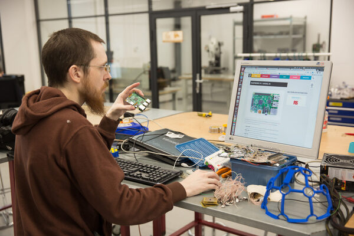

Разработчик
Профессия
Разработчик — это специалист, занимающийся проектированием, созданием и оптимизацией продуктов или систем. В IT-сфере разработчиком чаще всего называют профессионала, который пишет, тестирует и поддерживает программное обеспечение.
В чём заключается
Участвует во всем жизненном цикле продукта от концепции до финальной реализации. В его обязанности входит проектирование архитектуры системы, выбор подходящих технологий и инструментов, координация работы между разными специалистами (дизайнерами, тестировщиками, менеджерами). Разработчик не просто пишет код, но и принимает стратегические решения о том, как будет развиваться продукт, как масштабироваться под растущие нагрузки, как интегрировать различные модули между собой.
Отрасли
Веб-разработка (создание сайтов и веб-приложений с использованием frontend и backend технологий), мобильная разработка (разработка нативных и кроссплатформенных приложений для iOS и Android), геймдев (создание игр от инди-проектов до AAA-тайтлов с использованием специализированных движков), кибербезопасность (защита систем, тестирование на проникновение и разработка криптографических решений), научные вычисления (моделирование сложных процессов в физике, химии и биологии), desktop-разработка (создание программного обеспечения для операционных систем), AR/VR (разработка приложений дополненной и виртуальной реальности), телекоммуникации (создание сетевого ПО и решений для связи), автомобильная индустрия (программирование автопилотов и бортовых систем).
Суть работы
Работа разработчика — это создание и поддержка программ, сайтов и приложений. Он пишет код на специальных языках, чтобы компьютер понимал, что делать. Разработчик не только создаёт новые функции, но и ищет ошибки — почему кнопка не нажимается или почему приложение вылетает. Он тестирует свою работу, чтобы всё работало гладко, а потом обновляет программу, добавляя новые возможности или улучшая старые. Часто разработчик работает в команде с дизайнерами, менеджерами и другими специалистами, чтобы продукт был удобным и полезным для пользователей. В итоге его цель — превратить идею в работающий цифровой продукт.
Образование
1. Высшее образование
Прикладная информатика
Информатика и вычислительная техника
Программная инженерия
Кибербезопасность
Искусственный интеллект
2. Колледжи и техникумы
Разработка ПО
Компьютерные системы и сети
Информационные системы
3. Онлайн-университеты и курсы
4. Bootcamp’ы
5. Альтернативные пути
Военные/технические вузы: если хотите работать в гос. IT-структурах.
Фриланс: заказы на биржах (Upwork, Kwork) для набора опыта.
Хакатоны и соревнования: (Codeforces, LeetCode) для прокачки навыков.